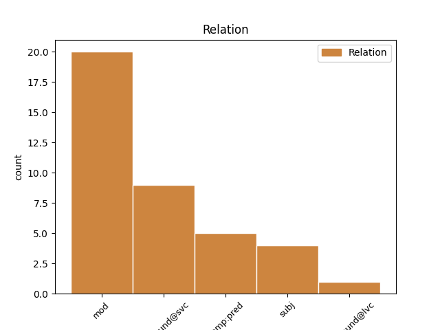
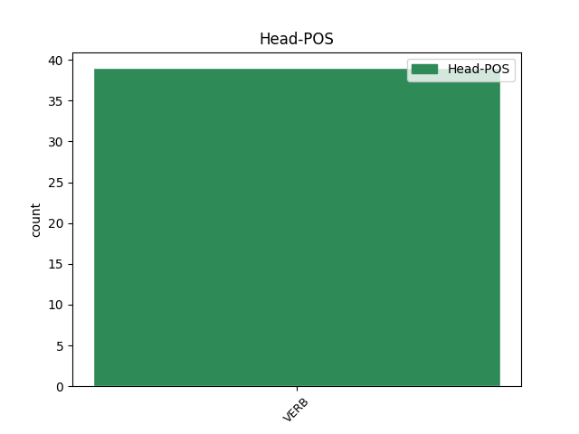
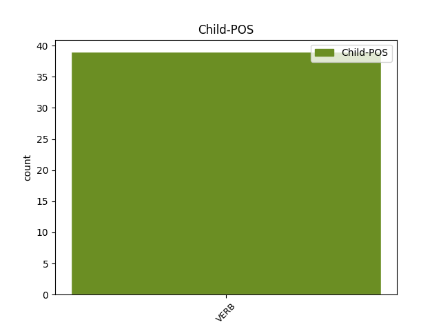

Distribution of features within this leaf



Agreement Rules sorted by frequency.
- When the dependent token is the modifer(mod) of the head token, and the head token is VERB and the dependent token is VERB.
1 Ես _ _ _ _ 0 _ _ _
2 տասնյոթ _ _ _ _ 0 _ _ _
3 տարեկան _ _ _ _ 0 _ _ _
4 էի _ _ _ _ 0 _ _ _
5 ու _ _ _ _ 0 _ _ _
6 հաստատ _ _ _ _ 0 _ _ _
7 գիտեի _ _ _ _ 0 _ _ _
8 , _ _ _ _ 0 _ _ _
9 որ _ _ _ _ 0 _ _ _
10 հրապարակ _ _ _ _ 0 _ _ _
11 եմ _ _ _ _ 0 _ _ _
12 իջնելու _ _ _ _ 0 _ _ _
13 , _ _ _ _ 0 _ _ _
14 իսկ _ _ _ _ 0 _ _ _
15 Ֆորմանի _ _ _ _ 0 _ _ _
16 ֆիլմը _ _ _ _ 0 _ _ _
17 ես _ _ _ _ 0 _ _ _
18 հետո _ _ _ _ 0 _ _ _
19 նայեցի նայել VERB _ Aspect=Perf|Mood=Ind|Number=Sing|Person=1|Polarity=Pos|Subcat=Intr|Tense=Past|VerbForm=Fin|Voice=Mid 0 _ _ _
20 , _ _ _ _ 0 _ _ _
21 երբ _ _ _ _ 0 _ _ _
22 Ղարաբաղի _ _ _ _ 0 _ _ _
23 հարցը _ _ _ _ 0 _ _ _
24 բանակցային _ _ _ _ 0 _ _ _
25 սեղանի _ _ _ _ 0 _ _ _
26 չավարտվող _ _ _ _ 0 _ _ _
27 զրույց _ _ _ _ 0 _ _ _
28 դարձավ դառնալ VERB _ Aspect=Perf|Mood=Ind|Number=Sing|Person=3|Polarity=Pos|Subcat=Intr|Tense=Past|VerbForm=Fin|Voice=Mid 19 mod _ LTranslit=daṙnal|SpaceAfter=No|Translit=darjav
29 ։ _ _ _ _ 0 _ _ _
1 Միայն _ _ _ _ 0 _ _ _
2 տեսնում _ _ _ _ 0 _ _ _
3 էին _ _ _ _ 0 _ _ _
4 , _ _ _ _ 0 _ _ _
5 որ _ _ _ _ 0 _ _ _
6 երբեմն _ _ _ _ 0 _ _ _
7 առավոտյան _ _ _ _ 0 _ _ _
8 , _ _ _ _ 0 _ _ _
9 երբեմն _ _ _ _ 0 _ _ _
10 երեկոյան _ _ _ _ 0 _ _ _
11 Գյուղ _ _ _ _ 0 _ _ _
12 է _ _ _ _ 0 _ _ _
13 իջնում _ _ _ _ 0 _ _ _
14 , _ _ _ _ 0 _ _ _
15 նայում _ _ _ _ 0 _ _ _
16 ՝ _ _ _ _ 0 _ _ _
17 ինչ _ _ _ _ 0 _ _ _
18 կա կամ VERB _ Aspect=Imp|Mood=Ind|Number=Sing|Person=3|Polarity=Pos|Subcat=Intr|Tense=Pres|VerbForm=Fin|Voice=Mid 0 _ _ _
19 - _ _ _ _ 0 _ _ _
20 չկա կամ VERB _ Aspect=Imp|Mood=Ind|Number=Sing|Person=3|Polarity=Neg|Subcat=Intr|Tense=Pres|VerbForm=Fin|Voice=Mid 18 compound@svc _ LTranslit=kam|Translit=čka
21 ու _ _ _ _ 0 _ _ _
22 դարձյալ _ _ _ _ 0 _ _ _
23 բարձրանում _ _ _ _ 0 _ _ _
24 Հաչա _ _ _ _ 0 _ _ _
25 Քարի _ _ _ _ 0 _ _ _
26 տակ _ _ _ _ 0 _ _ _
27 ՝ _ _ _ _ 0 _ _ _
28 Մկաց _ _ _ _ 0 _ _ _
29 Աղբրի _ _ _ _ 0 _ _ _
30 մոտ _ _ _ _ 0 _ _ _
31 գտնվող _ _ _ _ 0 _ _ _
32 իր _ _ _ _ 0 _ _ _
33 ժայռափորը _ _ _ _ 0 _ _ _
34 ։ _ _ _ _ 0 _ _ _
1 Դանդաղ _ _ _ _ 0 _ _ _
2 ու _ _ _ _ 0 _ _ _
3 հիմնավոր _ _ _ _ 0 _ _ _
4 , _ _ _ _ 0 _ _ _
5 կանոնակազմ _ _ _ _ 0 _ _ _
6 ու _ _ _ _ 0 _ _ _
7 ոչ _ _ _ _ 0 _ _ _
8 մանրաշարժ _ _ _ _ 0 _ _ _
9 կրքերով _ _ _ _ 0 _ _ _
10 Եսային _ _ _ _ 0 _ _ _
11 մի _ _ _ _ 0 _ _ _
12 պահ _ _ _ _ 0 _ _ _
13 եղավ _ _ _ _ 0 _ _ _
14 , _ _ _ _ 0 _ _ _
15 որ _ _ _ _ 0 _ _ _
16 զգաց _ _ _ _ 0 _ _ _
17 ամեն _ _ _ _ 0 _ _ _
18 ինչի _ _ _ _ 0 _ _ _
19 պարապությունը _ _ _ _ 0 _ _ _
20 , _ _ _ _ 0 _ _ _
21 մի _ _ _ _ 0 _ _ _
22 պահ _ _ _ _ 0 _ _ _
23 եղավ լինել VERB _ Aspect=Perf|Mood=Ind|Number=Sing|Person=3|Polarity=Pos|Subcat=Intr|Tense=Past|VerbForm=Fin|Voice=Mid 0 _ _ _
24 , _ _ _ _ 0 _ _ _
25 իր _ _ _ _ 0 _ _ _
26 դեմ _ _ _ _ 0 _ _ _
27 - _ _ _ _ 0 _ _ _
28 դիմաց _ _ _ _ 0 _ _ _
29 հստակ _ _ _ _ 0 _ _ _
30 տեսավ տեսնել VERB _ Aspect=Perf|Mood=Ind|Number=Sing|Person=3|Polarity=Pos|Subcat=Tran|Tense=Past|VerbForm=Fin|Voice=Act 23 subj _ LTranslit=tesnel|Translit=tesav
31 Սատանային _ _ _ _ 0 _ _ _
32 լույսերի _ _ _ _ 0 _ _ _
33 մեջ _ _ _ _ 0 _ _ _
34 , _ _ _ _ 0 _ _ _
35 մահերի _ _ _ _ 0 _ _ _
36 մեջ _ _ _ _ 0 _ _ _
37 , _ _ _ _ 0 _ _ _
38 իրադարձությունների _ _ _ _ 0 _ _ _
39 անհասկանալի _ _ _ _ 0 _ _ _
40 ու _ _ _ _ 0 _ _ _
41 անմիտ _ _ _ _ 0 _ _ _
42 վերջնախորհուրդի _ _ _ _ 0 _ _ _
43 մեջ _ _ _ _ 0 _ _ _
44 ։ _ _ _ _ 0 _ _ _
1 Էլ _ _ _ _ 0 _ _ _
2 ով _ _ _ _ 0 _ _ _
3 ՞ _ _ _ _ 0 _ _ _
4 կհամարձակվեր համարձակվել VERB _ Aspect=Prosp|Mood=Cnd|Number=Sing|Person=3|Polarity=Pos|Subcat=Intr|Tense=Imp|VerbForm=Fin|Voice=Mid 0 _ _ _
5 Հարութին _ _ _ _ 0 _ _ _
6 երկրորդ _ _ _ _ 0 _ _ _
7 հարցը _ _ _ _ 0 _ _ _
8 տար տալ VERB _ Aspect=Prosp|Mood=Sub|Number=Sing|Person=3|Polarity=Pos|Subcat=Tran|Tense=Imp|VerbForm=Fin|Voice=Act 4 comp:pred _ LTranslit=tal|Translit=tar
9 կամ _ _ _ _ 0 _ _ _
10 հաշիվ _ _ _ _ 0 _ _ _
11 պահանջեր _ _ _ _ 0 _ _ _
12 ։ _ _ _ _ 0 _ _ _
Disagree Examples:
1 Մենք _ _ _ _ 0 _ _ _
2 պարզում _ _ _ _ 0 _ _ _
3 էինք _ _ _ _ 0 _ _ _
4 քսանկոպեկանոցը _ _ _ _ 0 _ _ _
5 , _ _ _ _ 0 _ _ _
6 ու _ _ _ _ 0 _ _ _
7 մինչև _ _ _ _ 0 _ _ _
8 ինքը _ _ _ _ 0 _ _ _
9 հին _ _ _ _ 0 _ _ _
10 թերթից _ _ _ _ 0 _ _ _
11 կոն _ _ _ _ 0 _ _ _
12 էր _ _ _ _ 0 _ _ _
13 սարքում _ _ _ _ 0 _ _ _
14 , _ _ _ _ 0 _ _ _
15 որ _ _ _ _ 0 _ _ _
16 սերմը _ _ _ _ 0 _ _ _
17 լցնի _ _ _ _ 0 _ _ _
18 մեջը _ _ _ _ 0 _ _ _
19 , _ _ _ _ 0 _ _ _
20 մենք _ _ _ _ 0 _ _ _
21 ուսումնասիրում _ _ _ _ 0 _ _ _
22 էինք _ _ _ _ 0 _ _ _
23 Կաթողիկեի _ _ _ _ 0 _ _ _
24 խորհրդավոր _ _ _ _ 0 _ _ _
25 ներսը _ _ _ _ 0 _ _ _
26 ` _ _ _ _ 0 _ _ _
27 մուգ _ _ _ _ 0 _ _ _
28 կարմիր _ _ _ _ 0 _ _ _
29 թավշից _ _ _ _ 0 _ _ _
30 վարագույրը _ _ _ _ 0 _ _ _
31 , _ _ _ _ 0 _ _ _
32 ոսկեգույն _ _ _ _ 0 _ _ _
33 գործված _ _ _ _ 0 _ _ _
34 խաչը _ _ _ _ 0 _ _ _
35 , _ _ _ _ 0 _ _ _
36 սառը _ _ _ _ 0 _ _ _
37 պատերի _ _ _ _ 0 _ _ _
38 մեջ _ _ _ _ 0 _ _ _
39 տաք _ _ _ _ 0 _ _ _
40 վառվող _ _ _ _ 0 _ _ _
41 երկու _ _ _ _ 0 _ _ _
42 մոմերը _ _ _ _ 0 _ _ _
43 , _ _ _ _ 0 _ _ _
44 տգեղ _ _ _ _ 0 _ _ _
45 թվացող _ _ _ _ 0 _ _ _
46 սրբապատկերները _ _ _ _ 0 _ _ _
47 , _ _ _ _ 0 _ _ _
48 ու _ _ _ _ 0 _ _ _
49 էդ _ _ _ _ 0 _ _ _
50 աղքատիկ _ _ _ _ 0 _ _ _
51 եկեղեցին _ _ _ _ 0 _ _ _
52 արևածաղիկ _ _ _ _ 0 _ _ _
53 ծախող _ _ _ _ 0 _ _ _
54 պառավի _ _ _ _ 0 _ _ _
55 հսկողությամբ _ _ _ _ 0 _ _ _
56 էնքան _ _ _ _ 0 _ _ _
57 հարուստ _ _ _ _ 0 _ _ _
58 տեսք _ _ _ _ 0 _ _ _
59 ուներ _ _ _ _ 0 _ _ _
60 , _ _ _ _ 0 _ _ _
61 ու _ _ _ _ 0 _ _ _
62 երբ _ _ _ _ 0 _ _ _
63 պառավն _ _ _ _ 0 _ _ _
64 ամեն _ _ _ _ 0 _ _ _
65 անգամ _ _ _ _ 0 _ _ _
66 ասում _ _ _ _ 0 _ _ _
67 էր _ _ _ _ 0 _ _ _
68 ՝ _ _ _ _ 0 _ _ _
69 « _ _ _ _ 0 _ _ _
70 էկան գալ VERB _ Aspect=Perf|Mood=Ind|Number=Plur|Person=3|Polarity=Pos|Style=Coll|Subcat=Intr|Tense=Past|VerbForm=Fin|Voice=Mid 0 _ _ _
71 գողանան գողանալ VERB _ Aspect=Prosp|Mood=Sub|Number=Plur|Person=3|Polarity=Pos|Subcat=Tran|Tense=Pres|VerbForm=Fin|Voice=Act 70 compound@svc _ LTranslit=goġanal|SpaceAfter=No|Translit=goġanan
72 , _ _ _ _ 0 _ _ _
73 տանեն _ _ _ _ 0 _ _ _
74 » _ _ _ _ 0 _ _ _
75 ՝ _ _ _ _ 0 _ _ _
76 ավելի _ _ _ _ 0 _ _ _
77 էի _ _ _ _ 0 _ _ _
78 համոզվում _ _ _ _ 0 _ _ _
79 , _ _ _ _ 0 _ _ _
80 որ _ _ _ _ 0 _ _ _
81 գանձեր _ _ _ _ 0 _ _ _
82 կան _ _ _ _ 0 _ _ _
83 մեջը _ _ _ _ 0 _ _ _
84 , _ _ _ _ 0 _ _ _
85 ու _ _ _ _ 0 _ _ _
86 մուգ _ _ _ _ 0 _ _ _
87 կարմիր _ _ _ _ 0 _ _ _
88 թավշե _ _ _ _ 0 _ _ _
89 վարագույրի _ _ _ _ 0 _ _ _
90 հետևում _ _ _ _ 0 _ _ _
91 են _ _ _ _ 0 _ _ _
92 : _ _ _ _ 0 _ _ _
1 Ես _ _ _ _ 0 _ _ _
2 համալսարանին _ _ _ _ 0 _ _ _
3 մնաս մնալ VERB _ Aspect=Prosp|Mood=Sub|Number=Sing|Person=2|Polarity=Pos|Subcat=Intr|Tense=Pres|VerbForm=Fin|Voice=Mid 5 compound@lvc _ LTranslit=mnal|Translit=mnas
4 բարով _ _ _ _ 0 _ _ _
5 ասացի ասել VERB _ Aspect=Perf|Mood=Ind|Number=Sing|Person=1|Polarity=Pos|Subcat=Tran|Tense=Past|VerbForm=Fin|Voice=Act 0 _ _ _
6 ՝ _ _ _ _ 0 _ _ _
7 ինքս _ _ _ _ 0 _ _ _
8 ինձ _ _ _ _ 0 _ _ _
9 մխիթարելով _ _ _ _ 0 _ _ _
10 , _ _ _ _ 0 _ _ _
11 որ _ _ _ _ 0 _ _ _
12 շնական _ _ _ _ 0 _ _ _
13 Դիոգենեսը _ _ _ _ 0 _ _ _
14 ևս _ _ _ _ 0 _ _ _
15 համալսարան _ _ _ _ 0 _ _ _
16 չէր _ _ _ _ 0 _ _ _
17 ավարտել _ _ _ _ 0 _ _ _
18 ։ _ _ _ _ 0 _ _ _
1 Նրանց _ _ _ _ 0 _ _ _
2 աղջիկը _ _ _ _ 0 _ _ _
3 թևը _ _ _ _ 0 _ _ _
4 պարզել _ _ _ _ 0 _ _ _
5 էր _ _ _ _ 0 _ _ _
6 , _ _ _ _ 0 _ _ _
7 ես _ _ _ _ 0 _ _ _
8 տեսնում _ _ _ _ 0 _ _ _
9 էի _ _ _ _ 0 _ _ _
10 թափանցիկ _ _ _ _ 0 _ _ _
11 կապույտ _ _ _ _ 0 _ _ _
12 երակը _ _ _ _ 0 _ _ _
13 , _ _ _ _ 0 _ _ _
14 լսում _ _ _ _ 0 _ _ _
15 էի _ _ _ _ 0 _ _ _
16 բերաններում _ _ _ _ 0 _ _ _
17 պայթող _ _ _ _ 0 _ _ _
18 խնձորի _ _ _ _ 0 _ _ _
19 ու _ _ _ _ 0 _ _ _
20 նռան _ _ _ _ 0 _ _ _
21 ճայթոցը _ _ _ _ 0 _ _ _
22 , _ _ _ _ 0 _ _ _
23 թիկունքից _ _ _ _ 0 _ _ _
24 էլի _ _ _ _ 0 _ _ _
25 ձայն _ _ _ _ 0 _ _ _
26 լսեցի _ _ _ _ 0 _ _ _
27 , _ _ _ _ 0 _ _ _
28 շրջվեցի շրջվել VERB _ Aspect=Perf|Mood=Ind|Number=Sing|Person=1|Polarity=Pos|Subcat=Intr|Tense=Past|VerbForm=Fin|Voice=Mid 0 _ _ _
29 ՝ _ _ _ _ 0 _ _ _
30 ոչ _ _ _ _ 0 _ _ _
31 ոք _ _ _ _ 0 _ _ _
32 չկար կամ VERB _ Aspect=Imp|Mood=Ind|Number=Sing|Person=3|Polarity=Neg|Subcat=Intr|Tense=Imp|VerbForm=Fin|Voice=Mid 28 comp:pred _ LTranslit=kam|Translit=čkar
33 ու _ _ _ _ 0 _ _ _
34 չհասկացա _ _ _ _ 0 _ _ _
35 , _ _ _ _ 0 _ _ _
36 թե _ _ _ _ 0 _ _ _
37 ինչին _ _ _ _ 0 _ _ _
38 էի _ _ _ _ 0 _ _ _
39 կարոտել _ _ _ _ 0 _ _ _
40 ու _ _ _ _ 0 _ _ _
41 այլևս _ _ _ _ 0 _ _ _
42 չէի _ _ _ _ 0 _ _ _
43 ուզում _ _ _ _ 0 _ _ _
44 լսել _ _ _ _ 0 _ _ _
45 մյուս _ _ _ _ 0 _ _ _
46 ջոկատից _ _ _ _ 0 _ _ _
47 եկած _ _ _ _ 0 _ _ _
48 հրամանատարին _ _ _ _ 0 _ _ _
49 , _ _ _ _ 0 _ _ _
50 հրազենով _ _ _ _ 0 _ _ _
51 վիրավորված _ _ _ _ 0 _ _ _
52 Կամոն _ _ _ _ 0 _ _ _
53 փսխում _ _ _ _ 0 _ _ _
54 էր _ _ _ _ 0 _ _ _
55 , _ _ _ _ 0 _ _ _
56 գնացի _ _ _ _ 0 _ _ _
57 նրան _ _ _ _ 0 _ _ _
58 հույս _ _ _ _ 0 _ _ _
59 տալու _ _ _ _ 0 _ _ _
60 : _ _ _ _ 0 _ _ _
1 Մեր _ _ _ _ 0 _ _ _
2 5-րդ _ _ _ _ 0 _ _ _
3 փողոցը _ _ _ _ 0 _ _ _
4 քանդված _ _ _ _ 0 _ _ _
5 էր _ _ _ _ 0 _ _ _
6 ( _ _ _ _ 0 _ _ _
7 նոր _ _ _ _ 0 _ _ _
8 գազամուղ _ _ _ _ 0 _ _ _
9 էին _ _ _ _ 0 _ _ _
10 տանում _ _ _ _ 0 _ _ _
11 դեպի _ _ _ _ 0 _ _ _
12 պողոտա _ _ _ _ 0 _ _ _
13 ) _ _ _ _ 0 _ _ _
14 , _ _ _ _ 0 _ _ _
15 նրանք _ _ _ _ 0 _ _ _
16 ստիպված _ _ _ _ 0 _ _ _
17 շուտ _ _ _ _ 0 _ _ _
18 իջան _ _ _ _ 0 _ _ _
19 տաքսուց _ _ _ _ 0 _ _ _
20 , _ _ _ _ 0 _ _ _
21 մի _ _ _ _ 0 _ _ _
22 հարյուր _ _ _ _ 0 _ _ _
23 մետր _ _ _ _ 0 _ _ _
24 պետք _ _ _ _ 0 _ _ _
25 է _ _ _ _ 0 _ _ _
26 ոտքով _ _ _ _ 0 _ _ _
27 գնային _ _ _ _ 0 _ _ _
28 , _ _ _ _ 0 _ _ _
29 և _ _ _ _ 0 _ _ _
30 մեզ _ _ _ _ 0 _ _ _
31 չգիտես գիտել VERB _ Aspect=Imp|Mood=Ind|Number=Sing|Person=2|Polarity=Neg|Subcat=Tran|Tense=Pres|VerbForm=Fin|Voice=Act 33 comp:pred _ LTranslit=gitel|Translit=čgites
32 ինչու _ _ _ _ 0 _ _ _
33 թվաց թվալ VERB _ Aspect=Perf|Mood=Ind|Number=Sing|Person=3|Polarity=Pos|Subcat=Intr|Tense=Past|VerbForm=Fin|Voice=Mid 0 _ _ _
34 , _ _ _ _ 0 _ _ _
35 որ _ _ _ _ 0 _ _ _
36 դա _ _ _ _ 0 _ _ _
37 Մարտին _ _ _ _ 0 _ _ _
38 Սահակյանի _ _ _ _ 0 _ _ _
39 անցնելիք _ _ _ _ 0 _ _ _
40 ամենաերկար _ _ _ _ 0 _ _ _
41 ճանապարհն _ _ _ _ 0 _ _ _
42 է _ _ _ _ 0 _ _ _
43 ։ _ _ _ _ 0 _ _ _
1 Չհաշված _ _ _ _ 0 _ _ _
2 Հարութը _ _ _ _ 0 _ _ _
3 ՝ _ _ _ _ 0 _ _ _
4 որ _ _ _ _ 0 _ _ _
5 իմացավ իմանալ VERB _ Aspect=Perf|Mood=Ind|Number=Sing|Person=3|Polarity=Pos|Subcat=Tran|Tense=Past|VerbForm=Fin|Voice=Act 0 _ _ _
6 , _ _ _ _ 0 _ _ _
7 տեղում _ _ _ _ 0 _ _ _
8 վզքաշ _ _ _ _ 0 _ _ _
9 կանի անել VERB _ Aspect=Prosp|Mood=Cnd|Number=Sing|Person=3|Polarity=Pos|Subcat=Tran|Tense=Pres|VerbForm=Fin|Voice=Act 5 mod _ LTranslit=anel|SpaceAfter=No|Translit=kani
10 , _ _ _ _ 0 _ _ _
11 գլուխը _ _ _ _ 0 _ _ _
12 կշպրտի _ _ _ _ 0 _ _ _
13 մի _ _ _ _ 0 _ _ _
14 կողմ _ _ _ _ 0 _ _ _
15 ... _ _ _ _ 0 _ _ _